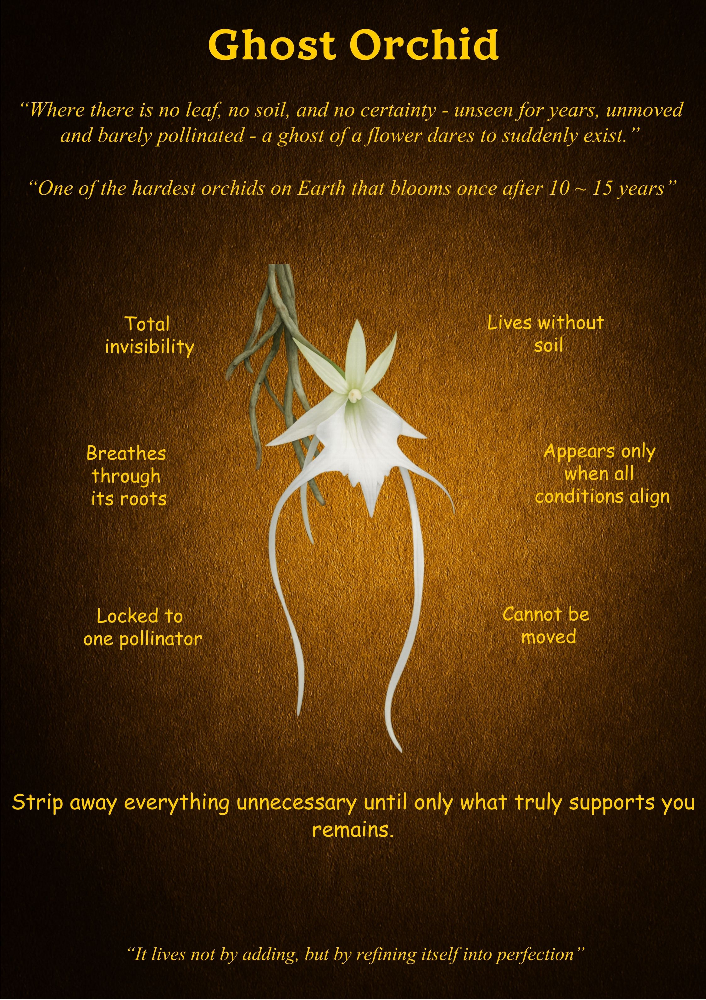

Ghost Orchid
"Where there is no leaf, no soil, and no certainty—a ghost dares to suddenly exist."
What is Unique
The Ghost Orchid is a botanical enigma that defies the basic rules of plant life. It exists without leaves, without soil, and often without being seen for a decade at a time. It is a leafless epiphyte that clings to the bark of trees in deep, humid swamps. Because it lacks foliage, it is nearly invisible until the moment it decides to bloom, appearing like a white specter floating in mid-air. It is one of the hardest orchids on Earth to find, blooming only after 10 to 15 years of patient refinement.
Overall Synthesis
This exhibit explores the "Philosophy of the Essential." The Ghost Orchid proves that life does not require "more" to be significant; it requires "right." By stripping away the need for soil and leaves, it has mastered a form of existence that is entirely dependent on its core truth and its specific environment. It represents a life that has reached a state of perfection not by adding layers, but by refining its essence until only what is vital remains.
Its Functioning Systems
Principles & Wisdom
The Ghost Orchid offers a masterclass in **Essentialism**. In a world that constantly tells us to add—more possessions, more tasks, more noise—the orchid whispers a different path: **"Strip away everything unnecessary until only what truly supports you remains."** Its wisdom teaches us that our "roots" can do the heavy lifting if we stop distracting ourselves with "leaves." It reminds us that true perfection is found in refinement. When we align our internal conditions and wait for the right moment, we don't just exist; we dare to suddenly, magnificently, manifest.